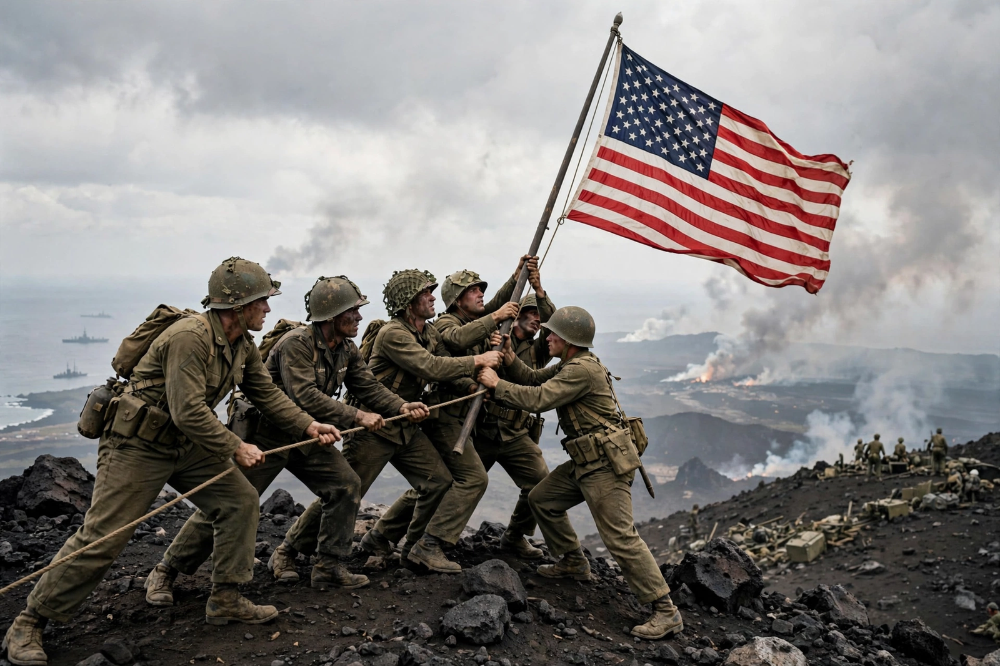

| Date | 19 February – 26 March 1945 |
|---|---|
| Location | Iwo Jima, Volcano Islands, Japan |
| Belligerents | United States vs Empire of Japan |
| Commanders | Holland Smith, Clifton Cates, Graves Erskine vs Tadamichi Kuribayashi |
| Casualties | US: 6,821 killed, c. 19,000 wounded; Japanese: c. 18,000 killed of 21,000 garrison |
| Result | American victory |
The Battle of Iwo Jima was a major battle in which the United States Marine Corps and Navy landed on and captured the island of Iwo Jima from the Imperial Japanese Army during the Second World War. The American invasion, designated Operation Detachment, aimed to take the island's airfields to provide a staging area for attacks on the Japanese main islands and an emergency landing strip for B-29 bombers striking from the Marianas. The five-week battle was among the fiercest and bloodiest in the Pacific War.
General Tadamichi Kuribayashi abandoned beach defence in favour of defence in depth: some 18 kilometres of tunnels, pillboxes and camouflaged positions honeycombed the volcanic island, anchored on the high ground of Mount Suribachi in the south and the Motoyama plateau in the north. His men were ordered to fight to the death — and almost all did: of roughly 21,000 defenders, only about 1,000 were taken prisoner, many of them wounded or unconscious.
After 74 days of preparatory bombardment, three Marine divisions landed on 19 February 1945, struggling ashore across soft volcanic ash. On 23 February men of the 28th Marines raised the US flag on Mount Suribachi; a second, larger flag-raising that afternoon was captured in Joe Rosenthal's Pulitzer-winning photograph, later the model for the Marine Corps War Memorial in Arlington. Progress northward was measured in metres against interlocking fire, flamethrowers and demolition charges; the island was declared secure on 26 March, though isolated holdouts remained — two soldiers surrendered only in 1949.
Iwo Jima was the only major battle of the Pacific War in which total American casualties exceeded Japanese ones. Twenty-seven Medals of Honor were awarded. By war's end more than 2,200 B-29s had made emergency landings on the island. The battle's cost influenced American thinking about the far greater invasion expected at Okinawa and the home islands.
This article is a recreation from memory for the muse-webcrawl project.